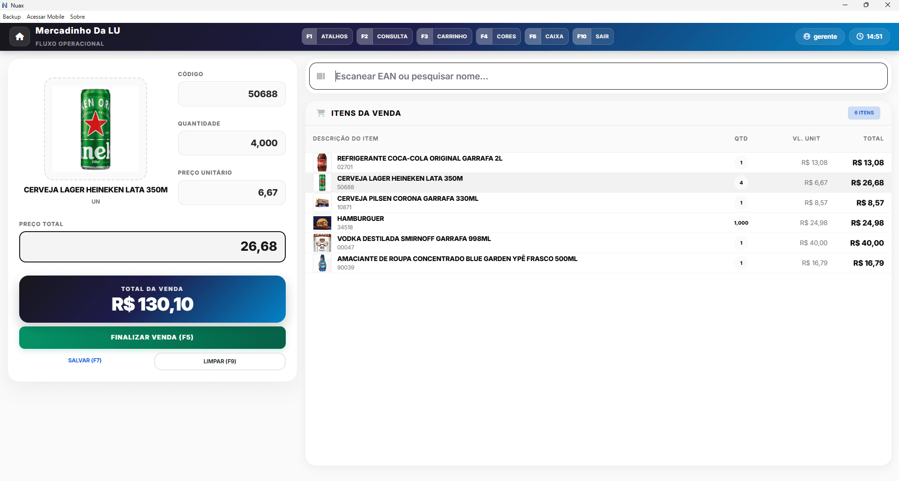
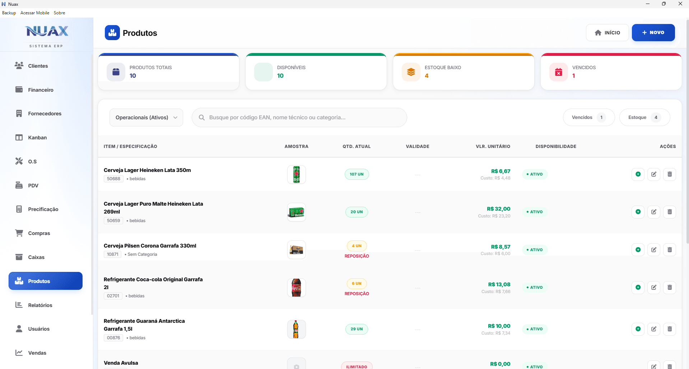
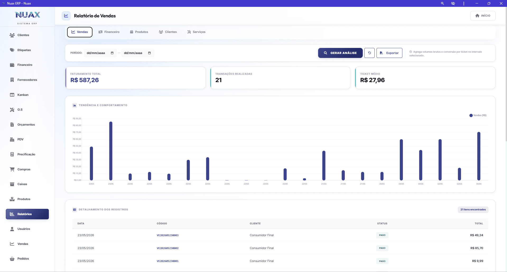
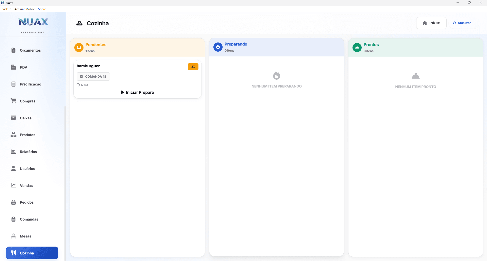

Sistema de gestão ERP 100% offline para WindowsSua empresa não
para por falta de
internet.
O NUAX ERP é um sistema de gestão com PDV, estoque, financeiro e ordens de serviço que instala no seu computador e opera sem internet — na velocidade máxima da sua própria máquina. Backup automático vai direto para o Google Drive, OneDrive ou Dropbox que você já tem. Sem taxa de servidor. Sem dado fora do seu controle.
Sem cartão de crédito · Instala em 5 minutos · Se não assinar, continua grátis

Operação que não
trava. Nunca.
A internet caiu? Irrelevante. O NUAX roda direto na sua máquina — sem depender de nuvem, sem esperar servidor. Quando a internet voltar, o backup vai automaticamente para o Google Drive, OneDrive ou Dropbox da sua própria conta. Seus dados nunca passam por ninguém.
Testar 30 dias grátisOpera Sem Internet
Venda, emita nota, gerencie estoque e atenda cliente — mesmo com a internet completamente fora. Nenhuma venda perdida por queda de conexão.
Abre em menos de 1 segundo
Cada tela responde na velocidade do seu próprio computador — sem loading, sem esperar servidor, sem depender de conexão.
Seus Dados Ficam com Você
Nenhum dado da sua empresa trafega para servidores de terceiros. Nenhum. Fica na sua máquina — e no backup da sua própria conta de nuvem. Só você acessa.
Banco de dados criptografado
Os arquivos do banco são criptografados. Mesmo que alguém pegue o computador fisicamente, não consegue ler nada dos seus dados.
Um sistema de gestão
para o seu tipo de negócio.
Na assinatura você escolhe o grupo de módulos do seu segmento. No teste de 30 dias, tudo fica liberado para você experimentar.
Lojas, adegas e comércio
Sistema para loja com PDV offline, controle de estoque com alerta de vencimento, etiquetas com código de barras e financeiro.
Restaurantes, bares e lanchonetes
Sistema para restaurante com mesas e comandas, monitor KDS na cozinha e painel de pedidos prontos — tudo pela rede local.
Oficinas e assistências técnicas
Sistema de ordem de serviço com peças, status e entrega, orçamentos convertidos em OS e kanban para acompanhar cada serviço.
Interface construída
para velocidade real.
Sem loading, sem espera. Cada tela abre na hora porque tudo roda no seu computador — não num servidor a 1.000 km de distância.

Nunca mais perca
uma venda por queda de internet.
A frente de caixa do NUAX responde em milissegundos — sem loading, sem travamento. A internet caiu? O caixa continua aberto.
- Emissão de cupom não fiscal
- Controle de caixa por operador
- Estoque atualizado automaticamente ao fechar a venda
Saiba exatamente
o que tem e o que falta.
Defina o mínimo de cada produto e o NUAX avisa antes de acabar — sem precisar de internet, sem planilha, sem surpresa na hora da venda.
- Alertas automáticos de estoque mínimo
- Categorização e variações de produto
- Histórico completo de entradas e saídas


Decisões baseadas
em dados, não em achismos.
Dashboards completos gerados aqui no seu computador — sem esperar servidor, sem seus números saindo da sua empresa. Vendas, fluxo de caixa e desempenho em segundos.
- Dashboards de vendas e financeiro
- Exportação para PDF e Excel
- Visão por período, produto e operador
Da comanda ao cliente,
tudo em rede local.
Do pedido na mesa até a entrega — tudo em tempo real, pela sua própria rede local. A cozinha vê os pedidos no KDS instantaneamente. A internet não entra nessa conta.
- Controle de mesas e comandas
- Monitor KDS para cozinha e bar
- Monitor de Finalizado para entrega ao cliente

Veja o NUAX ERP
funcionando na prática.
Assista aos tutoriais do sistema: instalação, vendas no PDV, estoque, financeiro e muito mais. Dê o play aqui mesmo e use o ícone de lista no player para trocar de vídeo.
ERP offline x
ERP na nuvem.
A diferença que decide se o seu caixa continua aberto quando a internet cai.
| Critério | NUAX ERP (offline) | ERP na nuvem |
|---|---|---|
| Internet caiu | Continua vendendo normalmente | Caixa e estoque param |
| Velocidade | Abre em menos de 1 segundo | Depende da conexão e do servidor |
| Onde ficam os dados | No seu computador, criptografados | Em servidores de terceiros |
| Backup | No seu Google Drive, OneDrive ou Dropbox | Controlado pelo fornecedor |
| Custo | Plano grátis ou a partir de R$49,90/mês, sem taxa de servidor | Mensalidade + servidor, muitas vezes por usuário |
| Vários caixas | Rede local (Wi-Fi), sem servidor externo | Exige internet em todos os pontos |
Dúvidas sobre o
NUAX ERP.
O que é o NUAX ERP?
O NUAX ERP é um sistema de gestão empresarial 100% offline para Windows 10 e 11, feito no Brasil pela NUAX Corp, com PDV, estoque, financeiro, ordens de serviço, mesas e KDS. Tem plano grátis para sempre e planos pagos a partir de R$49,90/mês.
O NUAX ERP funciona sem internet?
Sim, 100%. Vendas, PDV, estoque, financeiro e ordens de serviço funcionam offline. A internet é opcional e serve apenas para o backup na sua nuvem pessoal e para checar atualizações.
Quanto custa o NUAX ERP?
Há um plano grátis para sempre (até 50 clientes e 100 produtos) e planos pagos a partir de R$49,90/mês por computador. Não há taxa de implantação, de servidor ou por usuário.
Tem teste grátis?
Sim. São 30 dias com todos os módulos liberados, sem cartão de crédito. Se não assinar, o sistema continua no plano grátis, sem perder dados.
Onde ficam os dados da minha empresa?
No seu computador ou na sua rede local, em banco de dados criptografado. O backup vai direto para o seu Google Drive, OneDrive ou Dropbox, sem passar pelos servidores da NUAX.
Para quais tipos de negócio o NUAX ERP serve?
Lojas de varejo e atacado, adegas e conveniências, restaurantes, bares e lanchonetes, oficinas mecânicas, assistências técnicas e prestadores de serviço.
Qual a diferença entre ERP offline e ERP na nuvem?
O ERP offline roda no seu computador: não para quando a internet cai, responde na velocidade da máquina e não cobra servidor. O ERP na nuvem depende de conexão o tempo todo e guarda seus dados em servidores de terceiros.
Teste 30 dias. Não gostou?
Fica no plano grátis. Para sempre.
Se o trial acabar e você decidir não assinar, o NUAX não fecha. Seu acesso muda para o Plano Grátis — com vendas, financeiro e controle de clientes liberados para sempre, sem custo. Nenhuma cobrança, nenhuma surpresa, nenhum dado perdido.
- Cadastro de clientes
- Controle de produtos
- Vendas
- Financeiro
- Usuário
- Máx. 50 clientes
- Máx. 100 produtos
- Clientes e fornecedores sem limite
- Produtos sem limite e precificação
- Vendas e compras
- Financeiro e relatórios
- Vários usuários com permissões
- + Módulos do seu segmento (Comércio, Assistência ou Food)
Comece hoje.
Decida depois.
Em 5 minutos o NUAX está instalado e funcionando no seu computador. Trinta dias de tudo liberado — sem cartão, sem compromisso. Se não ficar, fica no plano grátis. Se ficar, começa em R$49,90 por mês.